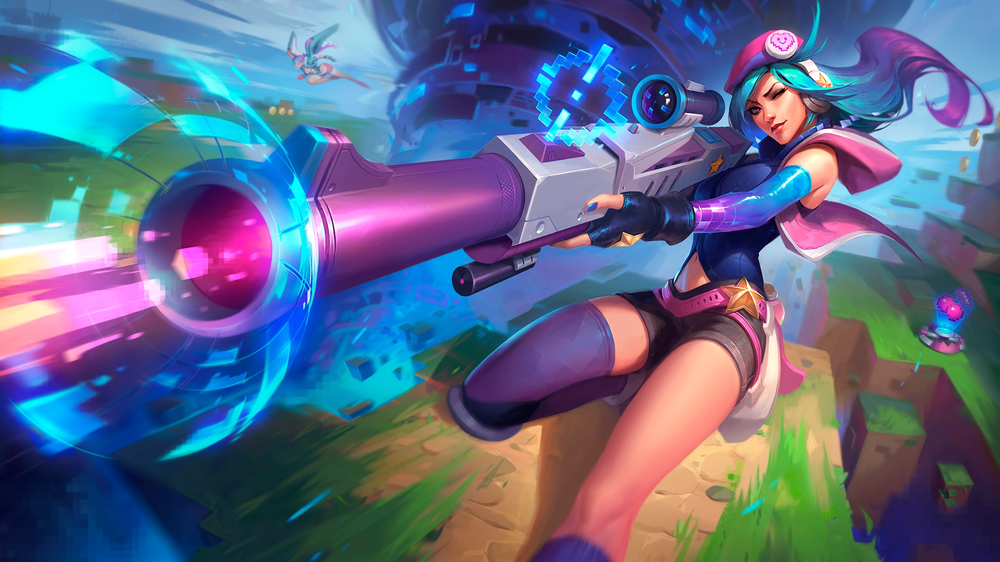
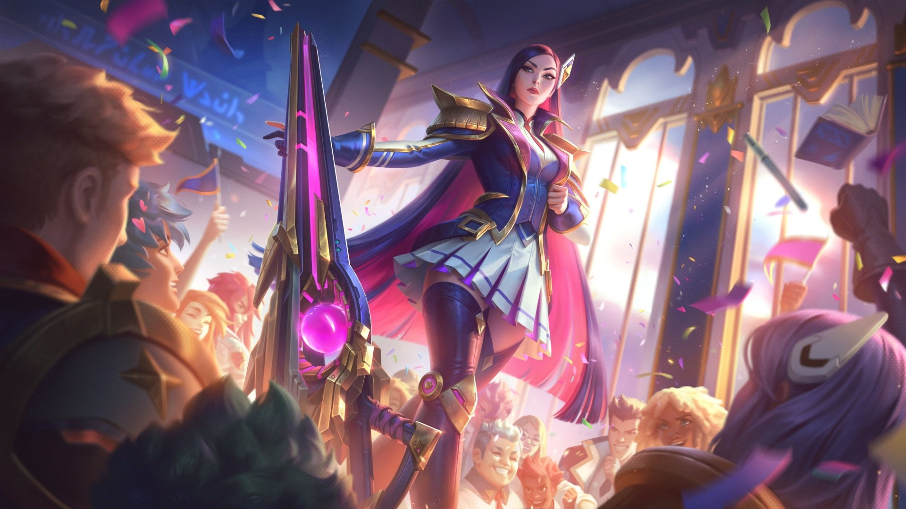

1. imagen que cambia de tamaño sin transición
2. imagen que cambia de tamaño con transición
Caitlyn, conocida por ser la mejor guardiana de la paz, es también la mejor opción de Piltover para librar a la ciudad de sus elusivos elementos criminales. A menudo se la empareja con Vi, actuando como un contrapunto genial a la naturaleza más impetuosa de su compañera.
A pesar de que lleva un rifle hextech único en su tipo, el arma más poderosa de Caitlyn es su intelecto superior, que le permite colocar trampas elaboradas para cualquier infractor de la ley lo suficientemente tonto como para operar en la Ciudad del Progreso.
ROLE TIRADOR ESCONDIDO